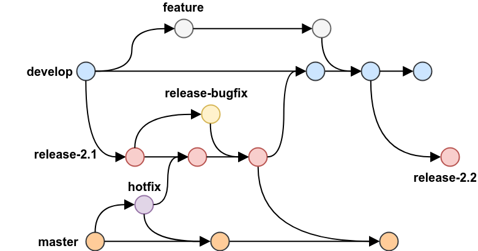

Histórico de Versão
| Data | Versão | Descrição | Autor(es) |
|---|---|---|---|
| 02/02/2022 | 1.0 | Criação do Documento | Luis Marques |
| 21/02/2022 | 1.1 | Revisão | Luis Marques |
Políticas do Repositório
Política de Criação de Branch
- O repositório do projeto terá uma branch principal e estável, a master.
- A partir da main será criada outra branch, a develop.
- Nenhum integrante da equipe é autorizado a fazer commits diretamente na master.
- Nenhum integrante da equipe é autorizado a fazer commits diretamente na devel.
- Deve-se ser criada uma nova branch para cada nova feature, correção ou falha a partir da branch develop.

{kind=link}
Nomeação da branch
Para dar um nome para sua branch, deve ser especificado o propósito da branch, nomeando com uma das seguintes opções:
- feature - define que a branch criada é para o desenvolvimento de uma nova funcionalidade.
- bugfix - define que será feito a correção ou manutenção em uma funcionalidade ou configuração referente ao projeto.
Após essa especificação, deverá ser inserido uma barra para fazer a separação e logo em seguida, o nome da branch, que deverá ser uma abstração do nome da história de usuário ou correção (HF) a qual se refere.
- O nome da branch deverá ser escrito seguindo o padrão Snake Case
Exemplos práticos
feature/dashboard_relatorio
bugfix/dashboard_relatorio
Política de commits
Os commits devem seguir o seguinte padrão:
- Deverão descrever sucintamente o que foi feito.
Descrição sucinta
- Deverão ser escritas no presente do indicativo.
Cria um novo documento
-
A língua do commit deverá seguir como idioma preferencial o inglês
- Como o trabalho será codificado em inglês, os commits de código e documentação devem ser escritos preferencialmente em inglês.
Creates a new class
Políticas de Criação de Issues
As issues devem seguir o seguinte padrão:
- Utilize o template para criação de Issues e siga suas instruções.
- O título, caso se trate de uma história de usuário, será de fato a história de usuário. Caso seja um bugfix ou alguma configuração, será uma breve explicação do que será feito naquela Issue.
- Adicione os assignees, ou seja, as pessoas responsáveis pelo trabalho da issue.
- Adicione as labels que representam o trabalho a ser realizado na issues.
Política de Pull Request(PR)
-
Os PRs passaram por revisões pelos integrantes da equipe e, ao fim de cada Sprint, ou em casos excepcionais, serão aceitos pelos mesmos.
-
Os PR deverão ser criados, após a conclusão da feature ou bugfix
Criação de um Pull Request
Para a criação de um pull request direcionado a branch master, deve-se seguir os seguintes passos:
2) Adicione os reviewers
- Assinale o reviewer, ou seja, o integrante da equipe responsável pela análise do pull request daquela sprint.
3) Adicione os assignees
- Assinale os colaboradores do pull request
4) Adicione as devidas labels
- Marque as labels relacionadas ao pull request. Geralmente será as mesmas assinaladas na issue referente.
Conflitos
- Se um pull request causar algum tipo de conflito, deve ser resolvido primeiro pela equipe que desenvolveu o que está causando conflito, prezando pela integridade e organização do histórico de commits, e então deve ser refeito o pedido para avaliação do merge.
Política de Aprovação do Código
- Para a aprovação do código, este deve ser aprovado pelo integrante da equipe que não tenha participado diretamente da produção do código daquele pull request.
- O integrante responsável pela analise deverá verificar se todos os critérios de aceitação foram satisfeitos para aquela feature ou bugfix.
Referências
Vamos Cuidar - Gestão.https://fga-eps-mds.github.io/2020.1-Grupo6/policies/branches/. Acessado em 02/02/2022
Vamos Cuidar - Gestão. https://fga-eps-mds.github.io/2020.1-Grupo6/policies/issues/. Acessado em 02/02/2022
Vamos Cuidar - Gestão. https://fga-eps-mds.github.io/2020.1-Grupo6/policies/pull_requests/. Acessado em 02/02/2022
Git branch naming conventions, Sanket. https://deepsource.io/blog/git-branch-naming-conventions/ Acessado em 02/02/2022
Case Styles: Camel, Pascal, Snake, and Kebab Case. https://betterprogramming.pub/string-case-styles-camel-pascal-snake-and-kebab-case-981407998841. Acessado em 02/02/2022
Git Workflows. https://blog.programster.org/git-workflows. Acessado em 02/02/2022